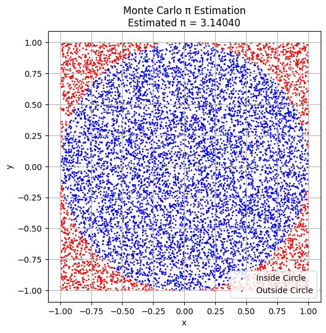
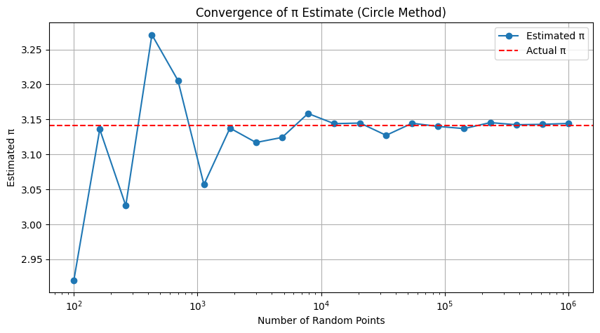
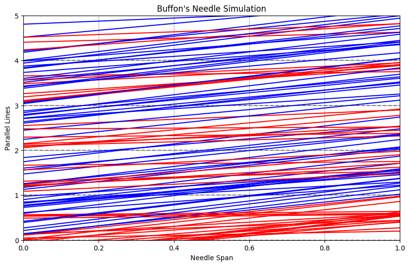
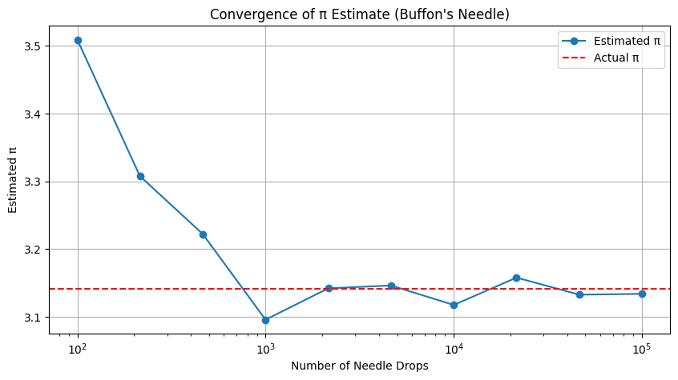

Problem 2
Estimating π Using Monte Carlo Methods
Motivation
Monte Carlo simulations use randomness to solve numerical and geometric problems. Estimating π is a classic example. This document includes two methods:
- Circle-based Monte Carlo method
- Buffon’s Needle method
Part 1: Estimating π Using Circle-Based Monte Carlo Method
1. Theoretical Background
A unit circle is inscribed in a square of side 2. The area of the circle is:
The area of the square is:
So the ratio:
Python implementation
import numpy as np
import matplotlib.pyplot as plt
# --- Part 1: Monte Carlo Circle Method ---
def estimate_pi(num_points):
x = np.random.uniform(-1, 1, num_points)
y = np.random.uniform(-1, 1, num_points)
distance = x**2 + y**2
inside_circle = distance <= 1
pi_estimate = 4 * np.sum(inside_circle) / num_points
return pi_estimate, x, y, inside_circle
# Single run and scatter plot
num_points = 10000
pi_estimate, x, y, inside = estimate_pi(num_points)
plt.figure(figsize=(6, 6))
plt.scatter(x[inside], y[inside], color='blue', s=1, label="Inside Circle")
plt.scatter(x[~inside], y[~inside], color='red', s=1, label="Outside Circle")
plt.title(f"Monte Carlo π Estimation\nEstimated π = {pi_estimate:.5f}")
plt.xlabel("x")
plt.ylabel("y")
plt.legend()
plt.axis("equal")
plt.grid(True)
plt.show()
# Convergence graph
sample_sizes = np.logspace(2, 6, 20, dtype=int)
estimates = [estimate_pi(n)[0] for n in sample_sizes]
plt.figure(figsize=(10, 5))
plt.plot(sample_sizes, estimates, marker='o', label='Estimated π')
plt.axhline(np.pi, color='r', linestyle='--', label='Actual π')
plt.xscale('log')
plt.xlabel('Number of Random Points')
plt.ylabel('Estimated π')
plt.title('Convergence of π Estimate (Circle Method)')
plt.legend()
plt.grid(True)
plt.show()
Explanation of Monte Carlo Circle π Estimation Code
This Python code estimates the value of π using the Monte Carlo method by simulating random points in a square and checking how many fall inside an inscribed unit circle.
🔹 Step-by-Step Breakdown:
- Function
estimate_pi(num_points): - Generates
num_pointsrandom \((x, y)\) coordinates within the square \([-1, 1] \times [-1, 1]\). - Calculates the distance of each point from the origin.
- Counts how many points fall inside the unit circle using the condition \(x^2 + y^2 \le 1\).
-
Estimates π with the formula: $$ \pi \approx 4 \cdot \frac{\text{Number inside circle}}{\text{Total points}} $$
-
Scatter Plot Visualization:
- Shows blue dots for points inside the circle and red for those outside.
-
Helps visualize the geometric probability that underlies the method.
-
Convergence Plot:
- Runs the simulation for increasing numbers of points (from \(10^2\) to \(10^6\)).
- Plots the estimated π values against the number of points.
- Includes a dashed horizontal line at the true value of π to observe how fast the estimation converges.
This method beautifully demonstrates how randomness can be used to approximate mathematical constants like π using geometry and probability.
3. Visualization
A scatter plot shows inside-circle points in blue and outside-circle points in red.

4. Convergence Analysis
A plot of estimated π versus number of points (log scale) shows convergence to real π.

Part 2: Estimating π Using Buffon’s Needle
1. Theoretical Background
If a needle of length \(\ell\) is dropped onto a plane with parallel lines spaced distance \(d\) apart, the probability it crosses a line is:
Where: - \(N\) = total number of throws - \(H\) = number of crossings
Python implementation
import numpy as np
import matplotlib.pyplot as plt
# --- Part 2: Buffon’s Needle Method ---
# π estimation function using Buffon's Needle experiment
def buffon_needle(num_needles, needle_length=1.0, line_distance=1.0):
hits = 0
for _ in range(num_needles):
center = np.random.uniform(0, line_distance / 2) # Distance from center to nearest line
angle = np.random.uniform(0, np.pi / 2) # Random angle between 0 and 90 degrees
if center <= (needle_length / 2) * np.sin(angle): # Crossing condition
hits += 1
if hits == 0:
return None # Avoid division by zero
return (2 * needle_length * num_needles) / (line_distance * hits)
# Run the simulation with 10,000 needles
estimated_pi_buffon = buffon_needle(10000)
print(f"Estimated π using Buffon's Needle: {estimated_pi_buffon:.5f}")
# Optional: Visualize the needle drops
def buffon_visualize(num_needles=100, needle_length=1.0, line_distance=1.0):
plt.figure(figsize=(10, 6))
# Draw parallel lines
for i in range(6):
plt.axhline(i * line_distance, color='gray', linestyle='--')
# Drop needles
for _ in range(num_needles):
y_center = np.random.uniform(0, 5)
theta = np.random.uniform(0, np.pi)
dy = (needle_length / 2) * np.sin(theta)
y1 = y_center - dy
y2 = y_center + dy
color = 'blue' if int(y1 / line_distance) != int(y2 / line_distance) else 'red'
plt.plot([0, 1], [y1, y2], color=color)
plt.title("Buffon's Needle Simulation")
plt.xlim(0, 1)
plt.ylim(0, 5)
plt.xlabel("Needle Span")
plt.ylabel("Parallel Lines")
plt.grid(True)
plt.show()
# Run visualization
buffon_visualize()
# Convergence graph for different needle counts
needle_counts = np.logspace(2, 5, 10, dtype=int)
estimates_buffon = [buffon_needle(n) for n in needle_counts]
plt.figure(figsize=(10, 5))
plt.plot(needle_counts, estimates_buffon, marker='o', label='Estimated π')
plt.axhline(np.pi, color='r', linestyle='--', label='Actual π')
plt.xscale('log')
plt.xlabel('Number of Needle Drops')
plt.ylabel('Estimated π')
plt.title("Convergence of π Estimate (Buffon's Needle)")
plt.legend()
plt.grid(True)
plt.show()
🪡 Explanation of Buffon’s Needle π Estimation Code
This code estimates the value of π using the Buffon’s Needle experiment, a probabilistic geometric method based on randomly dropping a needle on a surface with parallel lines.
🔹 Step-by-Step Breakdown:
- Function
buffon_needle(num_needles): - Simulates dropping
num_needleson a plane with parallel lines spaced a fixed distancedapart. - For each needle:
- A random center distance from the closest line is generated.
- A random angle of orientation (between 0 and 90 degrees) is picked.
- The needle is considered "crossing a line" if: $$ \text{center distance} \leq \frac{\ell}{2} \cdot \sin(\theta) $$
-
If \(H\) is the number of hits (crossings), π is estimated with: $$ \pi \approx \frac{2 \ell N}{d H} $$
-
Simulation Execution:
-
The function is run for 10,000 needles and prints an estimated value of π.
-
Visualization (
buffon_visualize): - Visually drops 100 needles between horizontal parallel lines.
- Blue needles cross a line; red needles do not.
-
This helps build geometric intuition behind the probability calculation.
-
Convergence Plot:
- Runs simulations for increasing numbers of needles (from \(10^2\) to \(10^5\)).
- Plots estimated π against needle count on a log scale.
- Shows how the estimate stabilizes and converges to real π as sample size increases.
This experiment not only offers a historical and elegant way to compute π, but also beautifully demonstrates how geometry, probability, and simulation can work together.
3. Visualization
A plot shows many needles dropped on parallel lines, with crossing ones in blue, others in red. 
4. Convergence Analysis
A plot shows estimated π versus number of drops on log scale. 
Final Comparison
| Method | Formula | Speed | Accuracy | Visual Intuition |
|---|---|---|---|---|
| Circle Monte Carlo | \(\pi \approx 4 \cdot \frac{\text{hits}}{\text{total}}\) | Fast | High with \(10^5\)+ | Very clear |
| Buffon’s Needle | \(\pi \approx \frac{2\ell N}{d H}\) | Slower | Lower with small \(N\) | Historical & interesting |